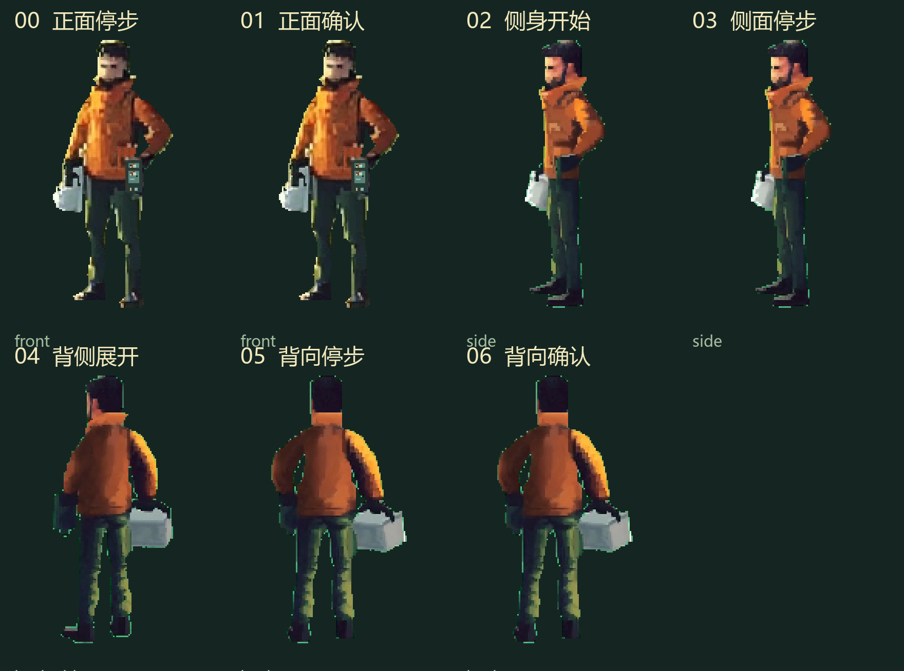

方向先于步态
停步，侧身，背向。
这是一段由完整像素方向帧组成的转身小样。它先验证人物是否会在转向时保持身份、脚底和装备归属，再进入行走。
当前状态：技术小样，未通过最终动作验收。 中间没有生成未知的三维插值或镜像帧；每次换向都明确使用已有方向原画。
逐帧查看

当前帧
01 / 正面停步
- 方向
- front
- 脚底基线
- y = 183 / 原生画布 128 × 196
- 来源
- actor-front.png
键盘 ← → 可逐帧查看，空格播放或暂停。减少动态时保持静止帧。
整段对照
每帧保持完整人物和装备；这段只证明方向切换的来源与节奏，不证明行走。

下一道门槛
先检查侧身和背向时的工具箱、记录器、衣摆和脚底是否继续属于同一个人。通过后再为每个方向各做一组负重关键姿态，最后才接限定通路。